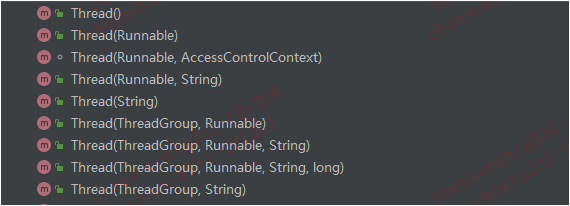

本博客系列是学习并发编程过程中的记录总结。由于文章比较多，写的时间也比较散，所以我整理了个目录贴（传送门），方便查阅。
Thread类是Java中实现多线程编程的基础类。本篇博客就来介绍下Thread类的常用API和常见用法。
Thread类常用的方法如下：
还有Thread类提供了功能丰富的构造函数，大家可以选合适的使用

public class MyThread {
public static void main(String[] args) {
Thread thread = Thread.currentThread();
//这个方法返回的是当前线程所在线程组以及这个线程组的子线程组内活动的线程数
//这个值是一个估计值，所以这个方法的应用场景不大
int activeCount = Thread.activeCount();
System.out.println("当前系统中活动线程数["+activeCount+"]");
//向标准错误输出流输出当前的线程栈,不会阻断程序的继续执行
Thread.dumpStack();
//获取所有线程栈信息
Map<Thread, StackTraceElement[]> allStackTraces = Thread.getAllStackTraces();
//获取类加载器
ClassLoader contextClassLoader = thread.getContextClassLoader();
//获取当前线程名字
String threadName = thread.getName();
System.out.println("current thread name["+threadName+"]");
//获取当前线程ID
long threadId = thread.getId();
System.out.println("current thread id["+threadId+"]");
//获取当前线程的优先级，一共有1~10总共10个优先级，这个优先级并不是在
//所有平台都生效的
int priority = thread.getPriority();
System.out.println("current thread priority["+priority+"]");
StackTraceElement[] stackTrace = thread.getStackTrace();
System.out.println("-------------stackTrace info--------------");
for (int i = 0; i < stackTrace.length; i++) {
StackTraceElement element = stackTrace[i];
System.out.println("className:["+element.getClassName()+"]");
System.out.println("fileName：["+element.getFileName()+"]");
System.out.println("line nunber：["+element.getLineNumber()+"]");
System.out.println("method name:["+element.getMethodName()+"]");
System.out.println("is native method:["+element.isNativeMethod()+"]");
System.out.println("------------------------------------------");
}
Thread.State state = thread.getState();
System.out.println("thread state:["+state+"]");
ThreadGroup threadGroup = thread.getThreadGroup();
String threadGroupName = threadGroup.getName();
System.out.println("thread group name:["+threadGroupName+"]");
//线程睡眠,调用sleep方法会使得线程进入timed_waiting状态，如果线程已经
//获得了锁资源，调用sleep方法是不会释放这个锁的
Thread.sleep(2000,500);
Thread.sleep(1000);
TimeUnit.SECONDS.sleep(2);
Thread thread1 = new Thread(new Runnable() {
@SneakyThrows
@Override
public void run() {
TimeUnit.SECONDS.sleep(100);
}
});
thread1.start();
thread1.join(50);
}
}
守护线程可以理解为服务线程，他们的作用就是服务于其他用户线程。当系统中不存在其他用户线程时，这些守护线程也会自动消亡。比如JVM的垃圾清理线程就是守护线程。我们可以使用如下方法查看和设置线程是否是守护线程。
thread.isDaemon();
thread.setDaemon(true);开发过程中我们可能会有这样的需求：多个线程分别加载资源，等这些线程资源加载完毕之后对这些资源做统一汇总处理。join方法就能实现类似的功能。
调用线程的join方法会使得调用线程进入waiting状态，直到被调用的线程执行结束，调用线程才会重新获得执行的机会。
public class MyThread {
public static void main(String[] args) throws Exception {
Thread thread1 = new Thread(new Runnable() {
@SneakyThrows
@Override
public void run() {
TimeUnit.SECONDS.sleep(100);
}
});
thread1.start();
thread1.join();
System.out.println("main thread end...");
}
}
上面的代码中，main线程调用了thread1的join方法，main线程会被挂起进入waiting状态,直到thread1执行完毕之后，main线程才有机会重新获得执行机会。
join方法还有一个重载方法，这个方法可以指定超时时间。
thread1.join(50);如果thread1线程在50ms内还没执行完，main线程就可以重新获得执行机会。
调用线程的yield方法是在暗示让这个线程让出CPU资源，如果这个线程在执行一个CPU时间，已经执行到一半了，调用yield之后这个线程会放弃剩下的一半CPU时间回到就绪状态。但是需要注意的是线程可以完全忽略yield方法的调用，也就是yield方法并不是每次都调用成功的：
先贴上一段网友对线程中断的总结。
需要说明的是：interrupt()方法并不是中断线程，而是中断阻塞状态，或者将线程的[中断标志位]置为true。中断后线程将继续执行。
几个中断方法对比：